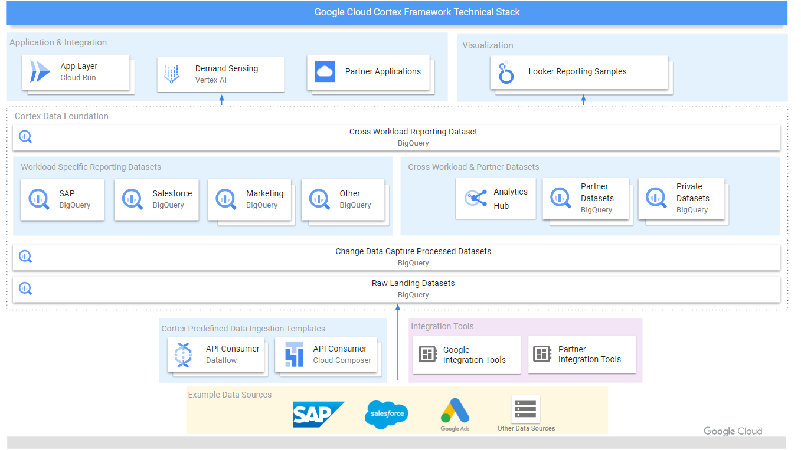

Google Cortex Framework
What is it ?
The Google Cortex Framework is a comprehensive and flexible analytics solution designed to help businesses leverage the full potential of their data. It integrates data processing pipelines, machine learning capabilities, and visualization tools to enable organizations to make data-driven decisions efficiently and effectively. Using its packaged content, you can reduce the risk, complexity and cost of getting started.
Key components of the Google Cortex Framework include :
- Data Ingestion
-
It supports the seamless integration of data from various sources.
- Data Processing
-
The framework employs advanced data processing techniques, such as batch and stream processing, to handle large volumes of data in real-time. This allows businesses to gain insights from their data almost instantaneously.
- Machine Learning
-
The framework leverages Google’s cutting-edge machine learning models and tools to perform predictive analytics, anomaly detection, and other complex analyses. This helps organizations to uncover hidden patterns and trends in their data.
- Data Visualization
-
The framework include a robust visualization tool that enable users to use already built-in interactive and intuitive dashboards or create custom ones. This helps in understanding the data better and making informed decisions based on the insights gained.
- Scalability
-
Built on Google’s cloud infrastructure, the Google Cortex Framework is highly scalable, allowing businesses to process and analyze massive datasets without compromising performance.
- Security
The architecture

The framework is designed to provide a comprehensive data and application integration architecture leveraging the power of Google Cloud services. Bellow is a detailed breakdown of the components and their interactions within the stack, starting from the foundational layer and moving upwards.
- Data Sources
-
The architecture supports data ingestion from a variety of sources, including SAP, Salesforce, Google Ads, and more.
Since new data sources are added regularly, you can find a complete list of supported data sources here.
- Data Ingestion and Integration Tools
-
To ingest data from sources, you have the choice between using native tools provided by Google and other tools provided by third-party partners.
If you choose to use Google’s native tools, depending on the data source, there are predifined data ingestion templates that you can use to quickly ingest data.
You can check out the Data integration guides for SAP on Google Cloud here.
- Cortex Data Foundation
-
The Cortex Data Foundation is the core layer of the framework. It is anchored on BigQuery, the Google Cloud petabyte-scale Datawarehouse as the core architectural component.
The Data Foundation provides packaged solution content for strategic business data sources like SAP, Salesforce and others and includes :
-
predefined templates to help with ingestion and change data capture pipelines
-
predefined data models to support rapid insights
-
simple machine learning templates and dashboards for different business use case scenarios.
-
deployment accelerators to help with the deployment of the solution content.
More technically,
- Raw Landing Datasets
-
Raw data from sources is ingested and stored in BigQuery. This forms the basis for further processing and analysis.
- Change Data Capture Processed Datasets
-
This layer processes changes in the raw landing datasets, ensuring that the most up-to-date information is available.
- Cross Workload Reporting Dataset
-
Using the Data Capture Processed Datasets, you can create specific reporting datasets for specific sources. You can also cross them with other partner datasets to create new reporting datasets to best gain insights from the data.
As long as data is landed in BigQuery in its raw format with the same granularity as it is in the source, the predifined Cortex templates will work.
-
- Application & Integration, Visualization
-
You can finally consume your processed data through a variety of tools, including :
- Looker
-
Looker is a powerful data visualization tool that allows you to create interactive dashboards and reports to visualize your data. Even better, there are predefined Looker dashboards and reports for different business scenarios.
- Vertex AI
-
Vertex AI is a machine learning platform that allows you to build, deploy, and manage machine learning models. You can use it for instance to predict demand based on your processed data to improve your decision-making process.
|
Google Cloud Cortex Data Foundation is open source. You can use all or parts of the available content, and you can adjust it to add any other data sources or customizations you may need for ultimate flexibility. You can find the source files on GitHub by clicking here. |
Dive into my work
With the Google Cortex Framework, my specific role involved :
-
studying how the framework is architecturaly set up
-
deploying SAP workload into BigQuery
-
configuring CI/CD workflow for automating the deployment
-
using looker to visualize the data
-
using powerBI to visualize the data.
Let’s dive into the details of each of these tasks.
Deploying SAP workload into BigQuery
In this section we are going to use the Google Cortex Framework’s predefined templates and deployment accelerators to deploy a SAP workload into BigQuery.
|
We don’t have access to a SAP system for this demo, so we are going to use SAP generated data. That implies that we are note going to use any integration tools to ingest the data into BigQuery. It will be automatically generated and stored in BigQuery. |
Before we start, make sure you have a Google Cloud Platform account with some credits to use the services. You can subscribe to a free trial here.
|
The free trial gives you $300 in credits to use on Google Cloud services for 90 days. |
Establish project and dataset structure
You need to create at least one project to host the BigQuery datasets and execute the deployment process. For more details click here.
In this demo, we are going to create a project called cortex-demo. Access the
Google Cloud Console and create a new project.
Click on the current project name at the top of the page.
Click on the New Project button.
Fill in the project name and click on the Create button. If you’re a member of
an organization, you can select the organization to link the project to.
Once the project is created, you can see it in the project list. Click on it to access the project dashboard.
Now that we have a project, we need to create datasets to store the data. We are going to create two datasets, one for the raw data and one for the processed data.
|
With the framework’s default configuration, it is mandatory to create the two datasets mentioned above. |
To create the datasets, follow the steps below :
Search for BigQuery in the search bar at the top of the page.
Among the results, in the section PRODUCTS & PAGES click on BigQuery (Data warehouse/analytics).
In the panel on the left, click on the three horizontal lines to open the menu located next to the project ID.
Choose the action Create dataset.
Fill in the dataset name, choose the location and click on the Create dataset button.
In this tutorial, let’s name the first dataset SAP_RAW_LANDING and the second one SAP_CDC_PROCESSED.
Repeat the same steps to create the second dataset.
Once the datasets are created, you can see them by unravelling the project in the panel on the left.
Configure Google Cloud Platform components
Before deploying the SAP workload, we need to enable some Google Cloud Platform components :
- BigQuery
-
We need to enable the BigQuery API to allow the framework to interact with BigQuery.
- Cloud Build
-
Cloud Build is a service that executes your builds on Google Cloud Platform infrastructure. We need to enable it to allow the framework use it for the deployment process.
- Cloud Composer
-
Cloud Composer is a fully managed workflow orchestration service. In our case, it ensures that data processing tasks are executed in the correct order at the right time.
- Cloud Storage
-
Cloud Storage is a storage component of the Google Cloud Platform. In our case, it will be used to store the deployment artifacts.
- Cloud Resource Manager
-
Cloud Resource Manager is a service that manages Google Cloud resources. We need to enable it to allow the framework to create and manage resources.
To enable these components, access to the cloud shell by clicking on the Activate Cloud Shell
as shown in the image below.
Then, run the following commands to enable the components :
gcloud config set project <SOURCE_PROJECT> (1)
gcloud services enable bigquery.googleapis.com \
cloudbuild.googleapis.com \
composer.googleapis.com \
storage-component.googleapis.com \
cloudresourcemanager.googleapis.com| 1 | Replace <SOURCE_PROJECT> with the project ID you created earlier. |
You should get a success message :
Grant permissions to the Cloud Build service account
Cloud Build needs to use a special service account to execute the deployment process. To do so, we need to grant the necessary permissions to that account.
By default, a Cloud Build service account is automatically tied to the project.
You can locate it in IAM.
In the Google Cloud Console, search for IAM in the search bar at the top of the page,
and click on IAM & Admin in the results.
Then, In the IAM page, click on GRANT ACCESS as shown in the image below.
In the opened window, fill in the New principals field with the term cloudbuild,
and select the principal that appears in the dropdown list with the following format :
[PROJECT_NUMBER]@cloudbuild.gserviceaccount.com - Legacy Cloud Build Service Account.
Then grant the following roles to the service account :
- BigQuery Data Editor
-
This role allows the service account to edit all the contents of datasets in BigQuery.
- BigQuery Job User
-
This role allows the service account to run jobs in BigQuery.
Save the changes by clicking on the ADD button.
Create a Storage bucket for storing DAG related files
A storage bucket is required to store processing DAG scripts and other temporary files generated during the deployment.
|
The generated scripts will have to be manually moved into a Cloud Composer instance after deployment. |
Navigate to Cloud Storage in the Google Cloud Console.
Then, create a new bucket by clicking on the CREATE button. Let’s name it cortex-demo-dags-bucket.
Then click on the CONTINUE button and select a location for the bucket. Let’s choose the region
where the BigQuery datasets are located (eu (multiple regions in European Union)).
Then click on CONTINUE and leave the default settings for the rest of the configuration by clicking
on the CREATE button at the end.
Once the bucket is created, navigate to the PERMISSIONS tab to grant the Storage Object Creator
role to the Cloud Build service account.
|
The |
Create a Storage bucket for logs
We are going to create another bucket to store the logs generated during the deployment process.
Follow the same steps as above to create a new bucket. Let’s name it cortex-demo-logs-bucket.
Once the bucket is created, navigate to the PERMISSIONS tab to grant the Storage Object Admin
permission to the Cloud Build service account.
|
The |
Configure the deployment
Clone the Cortex Data Foundation repository
Now that we have all the necessary components enabled and permissions granted, we can configure the deployment. First, we have to clone the Cortex Data Foundation repository to get the deployment scripts and configuration files. In the cloud shell, run the following command :
git clone --recurse-submodules https://github.com/GoogleCloudPlatform/cortex-data-foundationThen, navigate to the cortex-data-foundation directory :
cd cortex-data-foundationGlobal deployment configuration
The behavior of the deployment is controlled by the configuration file config.json.
Open the file in the Editor by clicking on Open Editor on the Cloud Shell Editor page as shown in the image below.
Then open the Folder cortex-data-foundation in the editor.
Then fill the content of the file config/config.json with the following content :
{
"testData": true, (1)
"deploySAP": true, (2)
"deploySFDC": false, (3)
"deployMarketing": false, (4)
"deployDataMesh": false, (5)
"turboMode": true, (6)
"projectIdSource": "cortex-demo-423814", (7)
"projectIdTarget": "cortex-demo-423814", (8)
"targetBucket": "cortex-demo-dags-bucket", (9)
"location": "EU", (10)
"languages": [ "E" ], (11)
"currencies": [ "USD" ], (12)
"testDataProject": "kittycorn-public", (13)
"k9": {
"datasets": {
"processing": "K9_PROCESSING", (14)
"reporting": "K9_REPORTING" (15)
}
},
"SAP": {
"deployCDC": true, (16)
"datasets": {
"cdc": "SAP_CDC_PROCESSED", (17)
"raw": "SAP_RAW_LANDING", (18)
"ml": "SAP_ML_MODELS", (19)
"reporting": "SAP_REPORTING" (20)
},
"SQLFlavor": "ecc", (21)
"mandt": "100" (22)
},
"shareWithCredly": false, (23)
"userInfo": { (24)
"email": "",
"firstName": "",
"lastName": ""
}
}| 1 | Set to true to generate test data. Since we don’t have access to a SAP system, we are going to use test data. |
| 2 | Set to true to execute the deployment for SAP workload. |
| 3 | Set to false to skip the deployment for Salesforce workload. |
| 4 | Set to false to skip the deployment for Marketing workload. |
| 5 | Set to false to skip the deployment for Data Mesh. |
| 6 | Set to true to speed up the deployment process. |
| 7 | The project ID where the source dataset is and the build will run. |
| 8 | The project ID for user-facing datasets (reporting and ML datasets). |
| 9 | The name of the bucket where the DAGs will be stored. |
| 10 | Location where the BigQuery dataset and GCS buckets are |
| 11 | Languages to be used in analytics models. E stands for English. |
| 12 | Currencies to be used in analytics models. USD stands for US Dollar. |
| 13 | The source of the test data for demo deployments. |
| 14 | Execute cross-workload templates (e.g., date dimension) as defined in the K9 configuration file. |
| 15 | Execute cross-workload templates and external data sources (e.g. Weather) as defined in the K9 configuration file. It is commented out by default. |
| 16 | Set to true to deploy the Change Data Capture (CDC) process. |
| 17 | The name of the dataset where the processed data will be stored. |
| 18 | The name of the dataset where the raw data will be stored. |
| 19 | The name of the dataset where the machine learning models will be stored. |
| 20 | The name of the dataset where the reporting data will be stored. |
| 21 | The SQL flavor to use for the SAP deployment. |
| 22 | The client number to use for the SAP deployment. |
| 23 | Set to true to share the deployment badge with Credly. |
| 24 | User information for the badge to be granted. |
For more information about the configuration file, refer to this section of the official documentation.
Once the configuration file is filled, save the changes.
Customizing reporting_settings file configuration
All the configuration files and templates related to SAP reporting models are
located in the src/SAP/SAP_REPORTING directory. Besides other files, this
directory contains 03 settings files that drive how the BigQuery objects
(tables or views) for SAP Reporting datasets are created. These files are :
-
reporting_settings_ecc.yaml -
reporting_settings_s4.yaml -
reporting_settings_union.yaml
|
During the deployment process, only one of these files will be used, depending on the
SQL flavor defined in the global configuration file. In our case, because we set the
SQL flavor to |
Whether the BigQuery objects are tables or views you can specify other informations. For instance, if it is a table, you can specify how often the table will be refreshed by the Cloud Composer task orchestrator. For more information about the configuration, refer to this section of the official documentation.
In our case, we are going to use the default settings.
Execute the deployment
Now that the configuration is set, we can execute the deployment process.
In the cloud shell, run the following command :
gcloud builds submit --project <SOURCE_PROJECT> \ (1)
--substitutions=_GCS_BUCKET=<Bucket for logs> (2)| 1 | Replace <SOURCE_PROJECT> with the project ID you created earlier. |
| 2 | Replace <Bucket for logs> with the name of the bucket where the logs will be stored. In our case, it is cortex-demo-logs-bucket. |
This command will trigger the deployment process, using the build configuration
file cloudbuild.yaml at the root. It will take some time to complete. You can
track the progress in the Cloud Build page in the Google Cloud Console as shown in the images below.
|
Ensure that you are in the |
Configure Cloud Composer
Once the deployment process is complete, you need to configure Cloud Composer to
run the processing DAGs. The DAGs are generated during the deployment process and
stored in the bucket cortex-demo-dags-bucket.
Create a Cloud Composer environment
Navigate to Cloud Composer in the Google Cloud Console.
We are going to create a cloud composer environment. To do so, Click on the
CREATE ENVIRONMENT, then Composer 1.
Fill in the environment name, and select the location as shown in the image below.
|
You can name the environment differently. You can also choose a different location. However, depending on the location, it may be impossible to create the composer 1 environment. |
Then grant the required permissions to the Cloud Composer service account as shown in the image below.
Leave the default settings for the rest of the configuration and click on the CREATE button.
Once the environment is created, navigate to the PYPI PACKAGES tab and click on EDIT.
Then and add the following :
-
pytrends~=4.9.2 -
holidays
Then click on the SAVE button to save the changes.
|
Those packages are required for the processing DAGs to run successfully. |
|
Since we leave the default settings for the rest of the configuration, a bucket is automatically created for the environment. That’s where Cloud Composer will look for the DAGs. |
Set up a connection to BigQuery
Before Cloud Composer can run the processing DAGs, we need to set up a connection to BigQuery in Airflow.
First, let’s create a service account to use for the connection. Go to the IAM & Admin
page and click on Service Accounts as shown in the image below.
Then click on the CREATE SERVICE ACCOUNT button.
Fill in the service account name and description, and click on the CREATE AND CONTINUE button.
Then grant the following role Editor to the service account click on the CONTINUE button.
|
It is always recommended to have least privileges on resources. |
Then click on the DONE button.
Once the service account is created, click on it to access the details.
Then go to the KEYS tab and click on the ADD KEY button and choose Create new key.
Choose the key type as JSON and click on the CREATE button.
|
The private key will be downloaded to your local machine. It will allow access to cloud resources, so keep it secure. |
Now the next step is to configure the connection in Airflow UI.
From the Cloud Composer main page, click on Airflow as shown in the image below.
Then on the Airflow UI, click on Admin and then Connections.
Click on the plus sign to add a new connection.
Fill in the connection details as shown in the image below.
Then click on the TEST button to test the connection.
Once the connection is successful, click on the SAVE button to save the connection.
|
Note that I name the connection Also, the connection type is |
Then click on the SAVE button to save the connection.
By following the steps above, create a connection for the Reporting DAGs as well. The connection name should be sap_reporting_bq.
For more information about the connection name, refer to this section of the official documentation.
Copy the DAGs to the Cloud Composer bucket
The last step is to copy the processing DAGs generated during the deployment process to the Cloud Composer bucket.
Navigate to the cloud shell and run the following command :
gsutil -m cp -r gs://<output bucket>/dags/ gs://<composer dag bucket>/
gsutil -m cp -r gs://<output bucket>/data/ gs://<composer sql bucket>/Replace <output bucket> with the bucket where the DAGs are stored (cortex-demo-dags-bucket).
Replace <composer dag bucket> with the bucket where the Cloud Composer DAGs are stored.
In our case, <composer sql bucket> is the same as <composer dag bucket>.
Once the DAGs are copied, you can check the Airflow UI to see that the tasks are in execution.
Configuring CI/CD workflow for automating the deployment
Suppose we have the source code of the Cortex Data Foundation on Github and we want to change the refresh frequency of the reporting tables. To ensure that the new parameters are immediately applied, a best practice would be to automate the deployment of the new frequencies once they are defined.
To achieve this, we will use tags in our version control process. The specific steps are as follows :
-
Link the Github repository to the Google Cloud project
Establish a connection between our Github repository and our Google Cloud project to ensure smooth and continuous integration.
-
Configure a trigger in Google Cloud
Set up a trigger that will monitor the creation of new tags on Github. Each time a tag is created, this trigger will automatically initiate the build process.
Link the Github repository to the Google Cloud project
First, we need to set up a Github repository to store the source code of the Cortex Data Foundation. We are going to fork the Data Foundation repository and its submodules repositories . So let’s start by forking the following repository :
|
A github account is required to fork the repository. If you don’t have one, you can create one. |
Once the repositories are forked, we are going to clone them to our local machine. Before that, we are going to generate an SSH key to authenticate with Github. Follow this tutorial to do so. Then, clone the forked Cortex Data Foundation repository by running the following command in the cloud shell :
git clone --recurse-submodules <SSH URL of the forked Cortex Data Foundation repository> cortex-data-foundation-ci-cd|
Replace |
Navigate to the component Repositories in the Google Cloud Console.
The in the 2ND GEN tab, click on CREATE HOST CONNECTION.
On the left panel select GitHub as your source provider and select a region and a fill
a name for your connection.
Then click on the CONNECT button.
You will get Secret Manager API is not enabled message. Click on VIEW SECRET MANAGER API.
Then click on the ENABLE button on the Secret Manager API page.
Once the enabled, go back to the previous page and click on the CONNECT button.
A new window will open. Click on the Continue button.
Then select the GitHub account you want to use.
Select Only select repositories, select all repositories related to the Cortex Data Foundation and click on Install.
We have successfully created a connection to the Github repository. Now link the Data Foundation repository to the connection as shown below.
Configuring a trigger in Google Cloud
Once the Github repository is linked to the Google Cloud project, we can now set up a trigger that will monitor the creation of new tags on Github. Each time a tag is created, this trigger will automatically initiate the build process.
Navigate to the Triggers page in the Google Cloud Console.
Then click on the CREATE TRIGGER button.
Fill a name for the trigger, choose a region and in the Event section, choose Push new tag.
Then in the Source section choose 2nd gen, select the Data Foundation repository we
previously linked and choose .* (any tag).
Leave the default settings for the section Configuration
|
The section |
In the Advanced section, add the _GCS_BUCKET substitution variable and assign it the
value of the bucket where the logs will be stored. In our case, it is cortex-demo-logs-bucket.
Then click on the SAVE button to create the trigger. We have successfully set up a trigger that will
automatically initiate the build process each time a new tag is created on Github.
Running the CI/CD workflow
Update the configuration file config.json
First we need to update the configuration file config.json. Update it as we did it here.
Then commit the changes by running the following commands :
git add config/config.json
git commit -m "update config file"Update the build file cloudbuild.yaml
Now we need to update the build file cloudbuild.yaml to include the new parameters.
Update the cloudbuild.yaml file with the following content :
# Copyright 2022 Google LLC
#
# Licensed under the Apache License, Version 2.0 (the "License");
# you may not use this file except in compliance with the License.
# You may obtain a copy of the License at
#
# https://www.apache.org/licenses/LICENSE-2.0
#
# Unless required by applicable law or agreed to in writing, software
# distributed under the License is distributed on an "AS IS" BASIS,
# WITHOUT WARRANTIES OR CONDITIONS OF ANY KIND, either express or implied.
# See the License for the specific language governing permissions and
# limitations under the License.
steps:
- name: gcr.io/cloud-builders/git (1)
entrypoint: "bash"
id: 'init_git_env'
waitFor: ['-']
args:
- "-c"
- |-
echo "Cleaning /workspace"
rm -rf /workspace/*
echo "Cloning the repository from Github"
git clone --recurse-submodules "${_GIT_URL}" "${_GIT_PATH}"
# init_deployment_config.py leaves the validated config.json file in workspace/config so it's available for other build steps
- name: gcr.io/kittycorn-public/deploy-kittycorn:v2.0
entrypoint: "bash"
id: 'init_deploy_config'
waitFor: ['init_git_env']
args:
- "-c"
- |-
set -e
echo "Initial configuration ${_CONFIG_FILE}:"
cat ${_CONFIG_FILE}
python3 src/common/init_deployment_config.py --config-file "${_CONFIG_FILE}" \
--sub-validator "src/SAP/SAP_REPORTING" \
--sub-validator "src/SFDC/src" \
--sub-validator "src/marketing/src"
echo "Processed configuration:"
cat ${_CONFIG_FILE}
echo -e "\n--------------------------------"
dir: ${_GIT_PATH} (2)
# remove the content of the DAGs bucket
- name: gcr.io/cloud-builders/gsutil (3)
id: 'clear_airflow_dags_bucket'
waitFor: ['init_deploy_config']
entrypoint: "bash"
args:
- "-c"
- |-
echo "Removing existing DAGs in the Airflow bucket ${_AIRFLOW_BUCKET}"
gsutil -m rm -r gs://${_AIRFLOW_BUCKET}/*
- name: gcr.io/kittycorn-public/deploy-kittycorn:v2.0
id: 'k9-pre'
waitFor: ['clear_airflow_dags_bucket'] (4)
entrypoint: "bash"
args:
- "-c"
- |-
export PYTHONPATH=$$PYTHONPATH:src/:.
python3 src/k9/src/deploy_k9.py \
--config-file "${_CONFIG_FILE}" \
--stage pre \
--logs-bucket "${_GCS_BUCKET}"
dir: ${_GIT_PATH} (2)
- name: gcr.io/kittycorn-public/deploy-kittycorn:v2.0
entrypoint: "bash"
id: 'sap-test-harness'
waitFor: ['clear_airflow_dags_bucket'] (4)
args:
- "-c"
- |-
_DEPLOY_SAP_=$(jq -r ."deploySAP" "${_CONFIG_FILE}")
_TEST_DATA_=$(jq -r ."testData" "${_CONFIG_FILE}")
_SQL_FLAVOUR_=$(jq -r ."SAP.SQLFlavor" "${_CONFIG_FILE}")
_SQL_FLAVOUR_UP_=$(echo "$${_SQL_FLAVOUR_}" | tr '[:lower:]' '[:upper:]')
if [[ "${_NO_TEST_DATA}" != "true" && "$${_TEST_DATA_}" == "true" && "$${_DEPLOY_SAP_}" == "true" && "$${_SQL_FLAVOUR_}" != "union" ]]; then
python3 src/common/create_test_harness.py --workload "SAP" --dataset "raw$${_SQL_FLAVOUR_UP_}"
else
echo "==Skipping Test Harness for SAP=="
fi
dir: ${_GIT_PATH} (2)
- name: gcr.io/kittycorn-public/deploy-kittycorn:v2.0
entrypoint: "bash"
id: 'sfdc-test-harness'
waitFor: ['clear_airflow_dags_bucket'] (4)
args:
- "-c"
- |-
_DEPLOY_SFDC_=$(jq -r ."deploySFDC" "${_CONFIG_FILE}")
_TEST_DATA_=$(jq -r ."testData" "${_CONFIG_FILE}")
if [[ "${_NO_TEST_DATA}" != "true" && "$${_TEST_DATA_}" == "true" && "$${_DEPLOY_SFDC_}" == "true" ]]; then
python3 src/common/create_test_harness.py --workload "SFDC" --dataset "raw"
else
echo "==Skipping Test Harness for SFDC=="
fi
dir: ${_GIT_PATH} (2)
- name: gcr.io/kittycorn-public/deploy-kittycorn:v2.0
id: 'sap-cdc'
waitFor: ['sap-test-harness', 'k9-pre']
entrypoint: "bash"
args:
- "-c"
- |-
_DEPLOY_SAP_=$(jq -r ."deploySAP" "${_CONFIG_FILE}")
_DEPLOY_CDC_=$(jq -r ."SAP.deployCDC" "${_CONFIG_FILE}")
_SQL_FLAVOUR_=$(jq -r ."SAP.SQLFlavor" "${_CONFIG_FILE}")
if [[ "$${_DEPLOY_SAP_}" == "true" && "$${_SQL_FLAVOUR_}" != "union" && "$${_DEPLOY_CDC_}" == "true" ]]; then
cp -f "${_CONFIG_FILE}" src/SAP/SAP_CDC/config/config.json
gcloud builds submit ./src/SAP/SAP_CDC \
--config=./src/SAP/SAP_CDC/cloudbuild.cdc.yaml \
--substitutions=_GCS_BUCKET='${_GCS_BUCKET}'
else
echo "==Skipping CDC for SAP=="
fi
dir: ${_GIT_PATH} (2)
- name: gcr.io/kittycorn-public/deploy-kittycorn:v2.0
id: 'sap-reporting'
waitFor: ['sap-cdc']
entrypoint: "bash"
args:
- "-c"
- |-
_DEPLOY_SAP_=$(jq -r ."deploySAP" "${_CONFIG_FILE}")
if [[ "$${_DEPLOY_SAP_}" == "true" ]]; then
cp -f "${_CONFIG_FILE}" src/SAP/SAP_REPORTING/config/config.json
gcloud builds submit ./src/SAP/SAP_REPORTING \
--config=./src/SAP/SAP_REPORTING/cloudbuild.reporting.yaml \
--substitutions=_GCS_BUCKET='${_GCS_BUCKET}'
else
echo "==Skipping Reporting for SAP=="
fi
dir: ${_GIT_PATH} (2)
- name: gcr.io/kittycorn-public/deploy-kittycorn:v2.0
id: 'sap-ml-models'
waitFor: ['sap-reporting']
entrypoint: "bash"
args:
- "-c"
- |-
if [[ "${_DEPLOY_SAP_ML_MODELS}" == "true" ]]
then
_DEPLOY_SAP_=$(jq -r ."deploySAP" "${_CONFIG_FILE}")
_SQL_FLAVOUR_=$(jq -r ."SAP.SQLFlavor" "${_CONFIG_FILE}")
_PJID_SRC_=$(jq -r ."projectIdSource" "${_CONFIG_FILE}")
_PJID_TGT_=$(jq -r ."projectIdTarget" "${_CONFIG_FILE}")
_LOCATION_=$(jq -r ."location" "${_CONFIG_FILE}")
_MANDT_=$(jq -r ."SAP.mandt" "${_CONFIG_FILE}")
_DS_MODELS_=$(jq -r ."SAP.datasets.ml" "${_CONFIG_FILE}")
_DS_REPORTING_=$(jq -r ."SAP.datasets.reporting" "${_CONFIG_FILE}")
_DS_RAW_=$(jq -r ."SAP.datasets.raw" "${_CONFIG_FILE}")
_DS_CDC_=$(jq -r ."SAP.datasets.cdc" "${_CONFIG_FILE}")
if [[ "$${_DEPLOY_SAP_}" == "true" && "$${_SQL_FLAVOUR_}" != "union" ]]; then
gcloud builds submit ./src/SAP/SAP_ML_MODELS \
--config=./src/SAP/SAP_ML_MODELS/cloudbuild.models.yaml \
--substitutions=_PJID_SRC=$$_PJID_SRC_,_PJID_TGT=$$_PJID_TGT_,_DS_RAW=$$_DS_RAW_,_DS_CDC=$$_DS_CDC_,_DS_REPORTING=$$_DS_REPORTING_,_DS_MODELS=$$_DS_MODELS_,_SQL_FLAVOUR=$$_SQL_FLAVOUR_,_LOCATION=$$_LOCATION_,_MANDT=$$_MANDT_,_GCS_BUCKET='${_GCS_BUCKET}'
else
echo "==Skipping ML for SAP=="
fi
else
echo "==Skipping ML for SAP=="
fi
dir: ${_GIT_PATH} (2)
- name: gcr.io/kittycorn-public/deploy-kittycorn:v2.0
id: 'sfdc-deploy'
waitFor: ['sfdc-test-harness', 'k9-pre']
entrypoint: "bash"
args:
- "-c"
- |-
_DEPLOY_SFDC_=$(jq -r ."deploySFDC" "${_CONFIG_FILE}")
if [[ "$${_DEPLOY_SFDC_}" == "true" ]]; then
cp -f "${_CONFIG_FILE}" src/SFDC/config/config.json
gcloud builds submit ./src/SFDC \
--config=./src/SFDC/cloudbuild.sfdc.yaml \
--substitutions=_GCS_BUCKET="${_GCS_BUCKET}"
else
echo "==Skipping SFDC=="
fi
dir: ${_GIT_PATH} (2)
- name: gcr.io/kittycorn-public/deploy-kittycorn:v2.0
entrypoint: "bash"
id: 'marketing-test-harness'
waitFor: ['clear_airflow_dags_bucket'] (4)
args:
- "-c"
- |-
_DEPLOY_MARKETING_=$(jq -r ."deployMarketing" "${_CONFIG_FILE}")
_TEST_DATA_=$(jq -r ."testData" "${_CONFIG_FILE}")
if [[ "${_NO_TEST_DATA}" != "true" && "$${_TEST_DATA_}" == "true" && "$${_DEPLOY_MARKETING_}" == "true" ]]; then
_DEPLOY_ADS_=$(jq -r ."marketing.deployGoogleAds" "${_CONFIG_FILE}")
_DEPLOY_CM360_=$(jq -r ."marketing.deployCM360" "${_CONFIG_FILE}")
_DEPLOY_TIKTOK_=$(jq -r ."marketing.deployTikTok" "${_CONFIG_FILE}")
_DEPLOY_LIVERAMP_=$(jq -r ."marketing.deployLiveRamp" "${_CONFIG_FILE}")
_DEPLOY_META_=$(jq -r ."marketing.deployMeta" "${_CONFIG_FILE}")
_DEPLOY_SFMC_=$(jq -r ."marketing.deploySFMC" "${_CONFIG_FILE}")
if [[ "$${_DEPLOY_ADS_}" == "true" ]]; then
echo "Deploying Google Ads Test Harness."
python3 src/common/create_test_harness.py --workload "marketing.GoogleAds" --dataset "raw"
fi
if [[ "$${_DEPLOY_CM360_}" == "true" ]]; then
echo "Deploying CM360 Test Harness."
python3 src/common/create_test_harness.py --workload "marketing.CM360" --dataset "raw"
fi
if [[ "$${_DEPLOY_TIKTOK_}" == "true" ]]; then
echo "Deploying TikTok Test Harness."
python3 src/common/create_test_harness.py --workload "marketing.TikTok" --dataset "raw"
fi
if [[ "$${_DEPLOY_LIVERAMP_}" == "true" ]]; then
echo "Deploying LiveRamp Test Harness."
python3 src/common/create_test_harness.py --workload "marketing.LiveRamp" --dataset "cdc"
fi
if [[ "$${_DEPLOY_META_}" == "true" ]]; then
echo "Deploying Meta Test Harness."
python3 src/common/create_test_harness.py --workload "marketing.Meta" --dataset "raw"
fi
if [[ "$${_DEPLOY_SFMC_}" == "true" ]]; then
echo "Deploying SFMC Test Harness."
python3 src/common/create_test_harness.py --workload "marketing.SFMC" --dataset "raw"
fi
else
echo "==Skipping Test Harness for Marketing=="
fi
dir: ${_GIT_PATH} (2)
- name: gcr.io/kittycorn-public/deploy-kittycorn:v2.0
id: 'marketing-deploy'
waitFor: ['k9-pre', 'marketing-test-harness']
entrypoint: "bash"
args:
- "-c"
- |-
_DEPLOY_MARKETING_=$(jq -r ."deployMarketing" "${_CONFIG_FILE}")
if [[ "$${_DEPLOY_MARKETING_}" == "true" ]]; then
cp -f "${_CONFIG_FILE}" src/marketing/config/config.json
gcloud builds submit ./src/marketing \
--config=./src/marketing/cloudbuild.marketing.yaml \
--substitutions=_GCS_LOGS_BUCKET="${_GCS_BUCKET}"
else
echo "==Skipping Marketing=="
fi
dir: ${_GIT_PATH} (2)
- name: gcr.io/kittycorn-public/deploy-kittycorn:v2.0
id: 'k9-post'
waitFor: ['k9-pre', 'sap-reporting', 'sfdc-deploy', 'marketing-deploy']
entrypoint: "bash"
args:
- "-c"
- |-
export PYTHONPATH=$$PYTHONPATH:src/:.
python3 src/k9/src/deploy_k9.py \
--config-file "${_CONFIG_FILE}" \
--stage post \
--logs-bucket "${_GCS_BUCKET}"
dir: ${_GIT_PATH} (2)
- name: gcr.io/kittycorn-public/credly:latest
id: 'credly-badge'
waitFor: ['k9-pre', 'sap-reporting', 'sfdc-deploy']
entrypoint: "bash"
args:
- "-c"
- |-
_FLAG_=$(jq -r ."shareWithCredly" "${_CONFIG_FILE}")
if [[ "$${_FLAG_}" != "true" ]]; then
echo "===Skipping assigning a badge==="
else
_EMAIL_=$(jq -r ."userInfo.email" "${_CONFIG_FILE}")
_FN_=$(jq -r ."userInfo.firstName" "${_CONFIG_FILE}")
_LN_=$(jq -r ."userInfo.lastName" "${_CONFIG_FILE}")
cd /usr/src/app
if [ -z "$${_EMAIL_}" ] || [ -z "$${_FN_}" ] || [ -z "$${_LN_}" ] || ! [ -f credly.py ]; then
echo "===Email, first name and last name are required in config.json==="
echo "===Skipping assigning a badge==="
else
python3 credly.py --fn "$${_FN_}" --ln "$${_LN_}" --email "$${_EMAIL_}" || exit 0
fi
fi
dir: ${_GIT_PATH} (2)
# copy generated dags to airflow bucket
- name: gcr.io/cloud-builders/gsutil (5)
id: 'copy_dags_to_airflow'
waitFor: ['credly-badge']
entrypoint: "bash"
args:
- "-c"
- |-
_TARGET_BUCKET_=$(jq -r ."targetBucket" "${_CONFIG_FILE}")
echo "Copying DAGs from ${_TARGET_BUCKET_} to ${_AIRFLOW_BUCKET}"
gsutil -m cp -r gs://$${_TARGET_BUCKET_}/dags/ gs://${_AIRFLOW_BUCKET}/
gsutil -m cp -r gs://$${_TARGET_BUCKET_}/data/ gs://${_AIRFLOW_BUCKET}/
logsBucket: "gs://$_GCS_BUCKET"
timeout: 32400s
substitutions:
_CONFIG_FILE: "config/config.json"
_DEPLOY_SAP_ML_MODELS: "false"
_NO_TEST_DATA: "false"
_GIT_URL: "https://github.com/DonnescoPablo/cortex-data-foundation.git" (6)
_GIT_PATH: "cortex-data-foundation" (7)
_AIRFLOW_BUCKET: "southamerica-east1-cortex-d-3a0e66a5-bucket" (8)
options:
substitution_option: "ALLOW_LOOSE"
tags: ["cortex"]| 1 | Clone the repository from Github. |
| 2 | Set working directory for build steps. |
| 3 | Remove the content of the DAGs bucket. |
| 4 | Wait for the clear_airflow_dags_bucket to complete before executing the next steps. |
| 5 | Copy the generated DAGs to the Airflow bucket. |
| 6 | The URL of the forked Cortex Data Foundation repository. |
| 7 | The name of the directory where the repository will be cloned. |
| 8 | Airflow bucket where the DAGs will be stored. |
Then commit the changes by running the following commands :
git add cloudbuild.yaml
git commit -m "update build file"Update the reporting settings file
Now let’s update the SAP reporting settings file src/SAP/SAP_REPORTING/reporting_settings_ecc.yaml to include the new parameters.
In the file, update the refresh frequency of the tables SalesOrders and SalesOrders_V2 to 5 minutes.
// ... (1)
bq_independent_objects:
// ... (1)
- sql_file: SalesOrders_V2.sql
description: "Sales Orders Header and Items"
type: table
table_setting:
load_frequency: "*/5 * * * *" (2)
// ... (1)
- sql_file: SalesOrders.sql
description: "Sales Orders Header and Items"
type: table
table_setting:
load_frequency: "*/5 * * * *" (2)
// ... (1)| 1 | There are other configurations in the file that are not shown here. |
| 2 | The new refresh frequency of the tables. |
Then commit and push the changes by running the following commands :
cd src/SAP/SAP_REPORTING
git add reporting_settings_ecc.yaml
git commit -m "update SAP reporting settings file"
git push origin HEAD:main
cd ../../../
git pushTrigger the build process
Now that the changes are committed and pushed to the repository, we can create a new tag to trigger the build process.
Navigate to the forked Cortex Data Foundation repository on Github and click on Tags.
Then click on the Create a new release button.
Click on the Choose a tag, enter a tag name v1.0.0 and click on Create new tag: v1.0.0 on publish.
Then add a release title and a description and click on the Publish release button.
Using Looker to visualize the data
We can use Looker to visualize the data stored in BigQuery. There are predefined dashboards that can be used to visualize the data. In this section, we are going to set up predefined SAP dashboards in Looker.
|
A Looker instance is needed to visualize the data. In this guide, we are going to use the Looker instance provided by Capgemini. To get access to the Looker instance, contact a Looker Capgemini administrator. |
Connecting Looker to BigQuery
Before setting up predefined SAP dashboards in Looker, we need to set up a connection between Looker and BigQuery. One way that Looker can authenticate into your BigQuery database is with a BigQuery service account.
Follow this tutorial to create a BigQuery service account and download the JSON credentials certificate.
Once the service account is created, navigate to the Looker instance and set up the connection to BigQuery by following this guide.
|
During the connection setup in Looker, fill the |
Now that the connection is set up, we can set up predefined SAP dashboards in Looker.
Setting up predefined SAP dashboards in Looker
First we have to fork the block-cortex-sap repository.
Then in the Looker instance’s homepage,
access the Looker Marketplace by clicking on Manage as shown in the image below.
In the Marketplace’s page, click on Install via Git URL as shown in the image below.
In the opened window, fill in the Git Repository URL field with the forked repository URL,
the Git Commit SHA field with the commit SHA of the forked repository and click on the Install button.
Then click on Agree and Continue
In the opened window, fill in the Connection Name field with the BigQuery connection we previously set up,
the GCP Project Name field with the project ID, the other fields as shown in the image below and click on the Install button.
We can see that the installation is successful.
Accessing the predefined SAP dashboards in Looker
Now we can access the predefined SAP dashboards in Looker. Click on the Main menu button. In the slide menu,
click on Blocks and among the appeared blocks, click on Cortex Data Foundation for SAP … as shown below.
Among the dashboards that appear, click on SAP Sales Orders to visualize the data.
We can see that the data is visualized in the dashboard. Notice that we have 6837 Total Orders.
We can even see the SQL query associated with the report. To do so, click on the Explore from here button.
Then click on the SQL tab.
In this section, we have set up predefined SAP dashboards in Looker to visualize the data stored in BigQuery. We can also create custom dashboards in Looker to visualize the data. However, Looker is not the only tool that can be used to visualize the data. We can also use PowerBI to visualize the data. The next section will show how to use PowerBI to visualize the data.
|
In opposition to Looker, there are not predefined dashboards in PowerBI. We have to ower own dashboards. |
Using PowerBI to visualize the data
We can use PowerBI to visualize the data stored in BigQuery. In this section, we are going to set up a connection between PowerBI and BigQuery and create a custom dashboard to visualize the data.
First, like in the previous section, we need to create a service account to use for the connection to PowerBI.
Follow the same steps to create a service account and download the JSON credentials certificate.
For the permissions, grant the Editor role to the service account.
|
It is always recommended to have least privileges on resources, so we will need to adjust the permissions later. |
Now that the service account is created and the JSON credentials certificate is downloaded, we are going to connect to BigQuery from PowerBI.
In the PowerBI Desktop, click on Rapport Vierge.
Then Click on Obtenir les données and Plus….
In the opened window search for BigQuery and click on Se connecter.
Then fill in the information as shown in the image below and click on OK.
Click on Connexion au compte de service and enter the service account email
and the content of the JSON credentials certificate and click on Se connecter.
|
You have to remove the line breaks in the JSON credentials certificate before pasting it. Else, the connection will fail. |
Once the connection is successful,select the SalesOrders table and click on Charger.
Choose DirectQuery as the data connectivity mode and click on OK.
Once the table is loaded, we can create a custom dashboard to visualize the data.
We are going to create a simple report that shows the total number of orders as in the Looker dashboard.
To do so, click on Nouvelle mesure and fill in the instruction below :
Sales Orders Count Orders =
CALCULATE(
COUNT(SalesOrders_V2[SalesDocument_VBELN]),
SalesOrders_V2[DocumentCategory_VBTYP] = "C",
SalesOrders_V2[CreationDate_ERDAT] >= DATE(2022, 1, 1),
SalesOrders_V2[CreationDate_ERDAT] < DATE(2022, 4, 22),
SalesOrders_V2[Client_MANDT] = "100"
)And validate it as shown in the image below.
Then in the Données panel, drag and drop the Sales Orders Count Orders measure to the
report area.